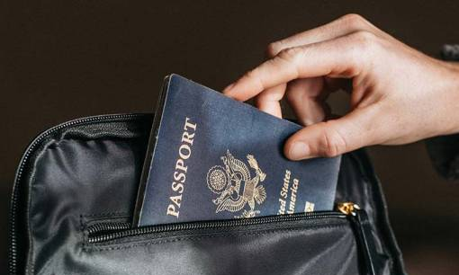

- Главная /
- Полезные статьи /
- Десять шагов: как получить американский паспорт
Десять шагов: как получить американский паспорт
Гражданство США и американский паспорт открывают границы для безвизового посещения более, чем 180 государств. Получить гражданство США можно через процедуру натурализации, когда негражданин США добровольно становится американским гражданином.
В этой статье мы расскажем вам обо всех этапах получения американского паспорта и о том, какие документы потребуется заполнить и получить. Следует сразу заметить, что получение паспорта США не означает получение гражданства. Теперь обо всем по порядку.
В этой статье мы расскажем вам обо всех этапах получения американского паспорта и о том, какие документы потребуется заполнить и получить. Следует сразу заметить, что получение паспорта США не означает получение гражданства. Теперь обо всем по порядку.

Что нужно, чтобы стать гражданином США?
10 шагов к американскому паспорту
Шаг 1
Проверьте факт того, что вы уже можете быть гражданином США, например, по праву рождения, или получили его автоматически, когда ваши родители получили гражданство США. Если вы не родились в США и не стали гражданами вместе с вашими родителями, то переходите шагу 2.
Шаг 2
Определите, имеете ли вы право стать гражданином США. Как это сделать? Пройдите по ссылке на форму M-480 и ответьте на вопросы:
- есть ли вам 18 лет
- являетесь ли вы постоянным жителем США и имеете ли грин-карту
- сколько лет вы живете в статусе постоянного жителя США
- покидали ли вы пределы США за последние 5 лет на 30 месяцев и более
- уезжали ли вы за пределы США на один год и более
- проживаете ли вы на территории штата, где вы подаете заявку на получение гражданства, как минимум три месяца
- умеете ли читать и писать на английском языке
- знаете ли вы основные исторические сведения о США и принципах работы Правительства США
- считаете ли вы себя человеком с хорошими моральными принципами
- если вы мужчина, были ли вы зарегистрированы в Selective Service (Американский военкомат)
- можете ли вы подтвердить факт, что не были дезертиром из армии США
- вы готовы служить в армии США, если этого потребует закон
- вы поддерживаете Конституцию США и готовы принести присягу верности этой стране.
Шаг 3
Заполните форму N-400 (заявление о натурализации). Это можно сделать в своем личном кабинете на сайте миграционной службы США. PDF версию можете посмотреть по этой ссылке.
Прочитайте . Соберите необходимые документы , подтверждающие ваше право на натурализацию:
Прочитайте . Соберите необходимые документы , подтверждающие ваше право на натурализацию:
5. Штат Миссури
Почти 40% населения штата имеет высшее образование, а средняя зарплата составляет $46,266, что является вполне средними показателями. Страдает сфера здравоохранения – 41 место по стране. В штате более 34% населения страдает ожирением. Но еще этот штат отличает другое – достаточно суровое законодательство. Статистика удивляет: 142 из 100 000 подростков осуждены. Среди взрослого населения цифры еще больше: 564 человека на каждые 100 000 населения. Местные жители не скрывают того, что законодательство штата намного суровее по сравнению с другими штатами.
В каждом штате есть свои достоинства и недостатки. То, что не понравится одним, восхищает других. Поэтому при выборе штата в первую очередь стоит обратить внимание на то, что важно именно вам: бизнес, экономика, образование, уровень преступности, география и пр. То, что может казаться раем для туристов, как например, Гавайи или Аляска, может быть совершенно нерациональным с позиции местного жителя, которому трудно реализовать себя.
В каждом штате есть свои достоинства и недостатки. То, что не понравится одним, восхищает других. Поэтому при выборе штата в первую очередь стоит обратить внимание на то, что важно именно вам: бизнес, экономика, образование, уровень преступности, география и пр. То, что может казаться раем для туристов, как например, Гавайи или Аляска, может быть совершенно нерациональным с позиции местного жителя, которому трудно реализовать себя.
- копия грин-карты с обеих сторон;
- пошлина ($640 за заявку + $85 за биометрию): при заполнении заявки онлайн, оплатить можно там же (если подавать заявку по почте, то нужно приложить чек или money order на данную сумму);
- фото на паспорт, если проживаете на территории США,
- подтверждение того, что вы подавали налоговые декларации каждый год.
Шаг 4
Подтвердите свою заявку, оплатив пошлину. После подтверждения вы получите специальный номер (receipt), по которому можно проверить статус вашего кейса.
Шаг 5
Пройдите биометрию. Миграционная служба США (USCIS) отправит вам уведомление, в котором будет указана дата, время и место для проведения процедуры.
Шаг 6
Пройдите собеседование. Как только все документы будут получены, а проверки пройдены, USCIS назначит собеседование для завершения процесса натурализации. Вы должны явиться в офис USCIS в дату и время, указанные в уведомлении об интервью.
Шаг 7
Получите решение. USCIS отправит вам уведомление о своем решении по почте. Если вы подали форму N-400 онлайн, то решение можно проверить в своем личном кабинете.
Вариантов решение три:
Вариантов решение три:
- Разрешено (Granted ) — USCIS может одобрить вашу форму N-400, если документы подтверждают ваше право на натурализацию.
- Продлено (Continued ) — USCIS может продолжить рассмотрение вашей заявки в случае, если необходимо предоставить дополнительные доказательства/документацию, а также, если вы не сдадите тест по английскому языку и/или основам гражданственности в первый раз.
- Отказано (Denied ) — USCIS отклонит вашу форму N-400.
Шаг 8
Получите уведомление о принятии Присяги на верность. Если USCIS утвердит вашу форму N-400 на предыдущем шаге, вы сможете принять участие в церемонии натурализации в тот же день, что и собеседование. Если церемония натурализации в тот же день недоступна, USCIS отправит вам уведомление с указанием даты, времени и места запланированной церемонии.
И сейчас самое неожиданное: получить гражданство США и получить паспорт гражданина США – не одно и то же!
И сейчас самое неожиданное: получить гражданство США и получить паспорт гражданина США – не одно и то же!
Шаг 9
После прохождения процедуры натурализации выдается не паспорт, а сертификат о натурализации. Многие американцы живут без паспорта, поскольку этот документ нужен только в случае выезда за пределы США. В ситуации высоко развитого внутреннего туризма и при отсутствии необходимости летать в бизнес-командировки за границу, гражданам США вполне хватает водительской лицензии.
Шаг 10
Чтобы получить паспорт гражданина США, нужно заполнить заявку. Размер пошлины за получение паспорта зависит от возраста и условий доставки. Да, американский паспорт отправляют по почте. Стоимость доставки от $18 и выше в зависимости от сроков доставки. Пошлина за получение первого американского паспорта взрослым составляет $130. Для детей до 16 лет паспорт обходится в $100. Сроки получения паспорта гражданина США могут достигать 8 недель. Еще одна неожиданность – подать заявку на паспорт и сделать фото можно на почте.